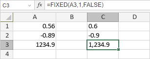

FIXED funkcija
Funkcija FIXED je jedna od tekstualnih i podataka funkcija. Koristi se za vraćanje tekstualnog prikaza broja zaokruženog na određeni broj decimalnih mesta.
Sintaksa
FIXED(number, [decimals], [no_commas])
Funkcija FIXED ima sledeće argumente:
| Argument | Opis |
|---|---|
| number | Broj koji treba zaokružiti. |
| decimals | Broj decimalnih mesta za prikaz. Ovo je opcioni argument; ako je izostavljen, podrazumevana vrednost je 2. |
| no_commas | Logička vrednost. Ako je postavljena na TRUE, funkcija će vratiti rezultat bez zareza. Ako je FALSE ili izostavljena, rezultat će biti prikazan sa zarezima. |
Napomene
Kako primeniti funkciju FIXED.
Primeri
Slika ispod prikazuje rezultat koji vraća funkcija FIXED.
